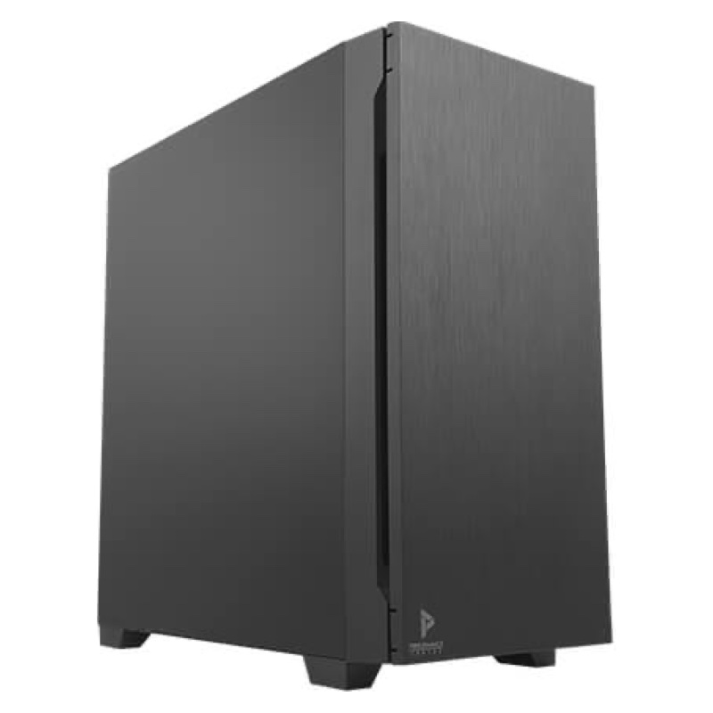

Ultra 9 · 128GBמחשב נייח סופר מקצועי
Core Ultra 9 285K · RTX 5070 · 128GB · 6TB
תחנת עבודה ללא פשרות, שאנחנו מרכיבים מהרכיבים הטובים ביותר: מעבד הדגל של Intel עם 24 ליבות וקירור אוויר כפול של 260W, כרטיס מסך RTX 5070, 128GB זיכרון, כונן Samsung 990 PRO המהיר ועוד 4TB לארכיון, על לוח Z890 עם Wi-Fi 7, במארז שקט במיוחד.
- ❄️קירור אוויר כפול 260Wהמעבד נשאר קריר ומהיר גם בעומס מלא
- 🎮RTX 5070 12GBחזק בכ-40% מ-RTX 5060 (PassMark)
- 💾2TB Samsung 990 PRO + 4TB6TB אחסון: מהירות שיא וארכיון ענק
- 📶Wi-Fi 7 ולוח Z890האלחוטי המהיר ביותר, PCIe 5.0 ו-USB4
- 🔇שקט, עם ספק 1000Wמארז Antec P10 FLUX מבודד רעש
כל רכיב, והיתרון שלו
מה כל חלק נותן, ואיך הוא עומד מול חלקים נפוצים פחות חזקים. הפס הכחול הכהה הוא מה שיש במחשב הזה.
⚡מעבד
Intel Core Ultra 9 285K
דגל המעבדים השולחניים של Intel: 24 ליבות (8 ביצועים + 16 יעילות) ועד 5.7GHz. רינדור, קומפילציה וחישובים כבדים מסתיימים מהר יותר, וגם ריבוי משימות קיצוני לא מאט אותו.
PassMark CPU Mark (ביצועי ריבוי ליבות)
❄️קירור מעבד
קירור אוויר מקצועי 260W, כפול מאווררים
מעבד של 24 ליבות צורך עד 250W בטורבו מלא. קירור האוויר הכפול מפזר עד 260W, כך שהמעבד נשאר קריר ושומר על מהירות מרבית לאורך זמן, בלי האטה מחום ובשקט יחסי.
יכולת פיזור חום (Watt) מול צריכת המעבד המרבית
🎮כרטיס מסך
NVIDIA GeForce RTX 5070 12GB
דור RTX 50 החדש עם 12GB זיכרון GDDR7: רינדור תלת-ממד, עריכת וידאו 4K, בינה מלאכותית ומשחקים בהגדרות גבוהות, עם DLSS 4.
PassMark G3D Mark
🧠זיכרון
128GB DDR5-5600
כמות זיכרון של תחנת עבודה מקצועית: פרויקטים ענקיים, מכונות וירטואליות רבות, וידאו 8K וסימולציות, הכל בזיכרון ובלי האטה.
נפח זיכרון
💾אחסון ראשי
Samsung 990 PRO 2TB
מהכוננים המהירים בעולם: מערכת, תוכנות ופרויקטים נפתחים כמעט מיידית. פי 13 מכונן SSD רגיל ופי 37 מדיסק קשיח.
מהירות קריאה רציפה לפי נתוני היצרנים
🗄אחסון משני
דיסק 4TB
מקום ענק לארכיון: פרויקטים ישנים, תמונות, סרטונים וגיבויים, בלי למלא את הכונן המהיר. ביחד: 6TB אחסון.
נפח אחסון כולל
🔌לוח אם
Gigabyte Z890 עם Wi-Fi 7
שבב Z890 העליון של Intel: תומך בהאצת מעבדי K, יותר נתיבי PCIe 5.0 ו-USB4, ו-Wi-Fi 7 המהיר ביותר שקיים היום.
מהירות Wi-Fi מרבית תיאורטית לפי התקן
🔋ספק כוח
Antec 1000W
ספק חזק עם רזרבה גדולה: המחשב צורך בעומס מלא בערך 600W, כך שהספק עובד רגוע וקריר, ויש מקום לשדרוג לכרטיס מסך חזק יותר בעתיד.
הספק הספק (Watt)
🔇מארז
Antec P10 FLUX
מארז שקט במיוחד: ספוג בידוד רעש בדפנות ובדלת, 5 מאווררים וזרימת אוויר מעולה. מחשב חזק מאוד שעובד בשקט.
ציוני המעבד וכרטיס המסך לפי PassMark (cpubenchmark.net, videocardbenchmark.net), נבדקו ב-26/10/2026. מהירויות כוננים לפי נתוני היצרנים, ו-Wi-Fi לפי המהירות התיאורטית של כל תקן.
למי זה מתאים?
עריכת וידאו ואנימציה
וידאו 4K ו-8K, אפקטים ואנימציה: 128GB ו-RTX 5070 מחזיקים הכל.
אדריכלות, הנדסה ורינדור
Revit, Lumion, 3ds Max ו-V-Ray: רינדור מהיר ומודלים ענקיים.
AI, פיתוח ומכונות וירטואליות
מודלי AI מקומיים, Docker ומכונות וירטואליות רבות במקביל.
המסך, המקלדת והעכבר לא כלולים. אפשר להוסיף מסך מהקטגוריה מסכים. הרכיבים עשויים להתחלף ברכיבים שווי ערך לפי המלאי.
מפרט טכני מלא
| מעבד | Intel Core Ultra 9 285K: 24 ליבות (8 ביצועים + 16 יעילות), עד 5.7GHz, מטמון 36MB |
|---|---|
| קירור מעבד | קירור אוויר מקצועי 260W, כפול מאווררים |
| כרטיס מסך | NVIDIA GeForce RTX 5070 12GB GDDR7 |
| זיכרון | 128GB DDR5-5600 |
| לוח אם | Gigabyte Z890 עם Wi-Fi 7 |
| כונן ראשי | 2TB Samsung 990 PRO NVMe PCIe 4.0 |
|---|---|
| כונן משני | 4TB דיסק קשיח |
| ספק כוח | Antec 1000W |
| מארז | Antec P10 FLUX, מארז שקט עם בידוד רעש ו-5 מאווררים |
| מערכת הפעלה | כולל התקנות מלאות |
|---|---|
| הרכבה | הרכבה, התקנה ובדיקת עומס אצלנו |
| משלוח | כולל משלוח חינם |
המפרט לפי נתוני היצרן (BSD מחשבים) והיבואן ועשוי להשתנות. התמונות להמחשה בלבד.